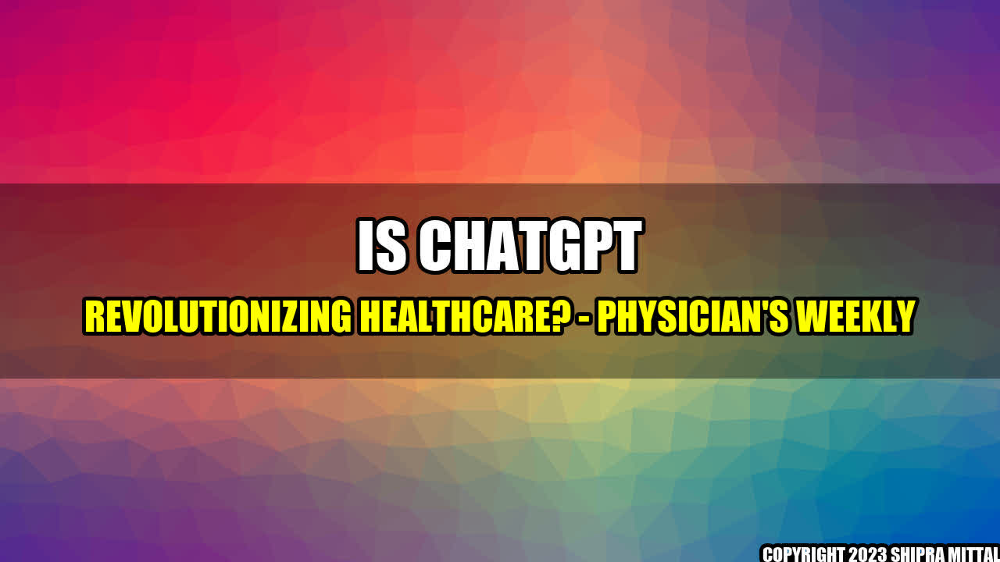

The Power of ChatGPT in Healthcare
Imagine waking up one day with a persistent headache and feeling a little out of sorts. You want to see a doctor, but you don't have the time to schedule an appointment or make a trip to the doctor's office. What do you do?
Enter ChatGPT, an AI-powered chatbot that can diagnose your symptoms and provide personalized medical advice â all from the comfort of your own home. ChatGPT is already revolutionizing the way we approach healthcare, making it more convenient, accessible, and affordable.
Concrete Examples
- Virtual Consultations: ChatGPT is transforming telemedicine by allowing patients to consult with doctors online. Patients can easily describe their symptoms in natural language, and ChatGPT can use its vast knowledge base to provide accurate medical advice.
- 24/7 Assistance: ChatGPT is always available to answer your questions, no matter the time or day. This makes it easier for patients to get the help they need, even when their doctor's office is closed.
- Patient Education: ChatGPT can provide patients with personalized health recommendations and educational materials, helping them better understand their condition and how to manage it.
Conclusion
In conclusion, ChatGPT is a groundbreaking technology that is transforming the world of healthcare. Here are three key takeaways:
- ChatGPT is making healthcare more convenient, accessible, and affordable.
- ChatGPT is enabling patients to receive medical advice and assistance 24/7.
- ChatGPT is empowering patients to take a more proactive role in their healthcare.
Reference:
Physician's Weekly: https://physiciansweekly.com/is-there-a-role-for-chatgpt-in-healthcare/
Akash Mittal Tech Article
Share on Twitter Share on LinkedIn